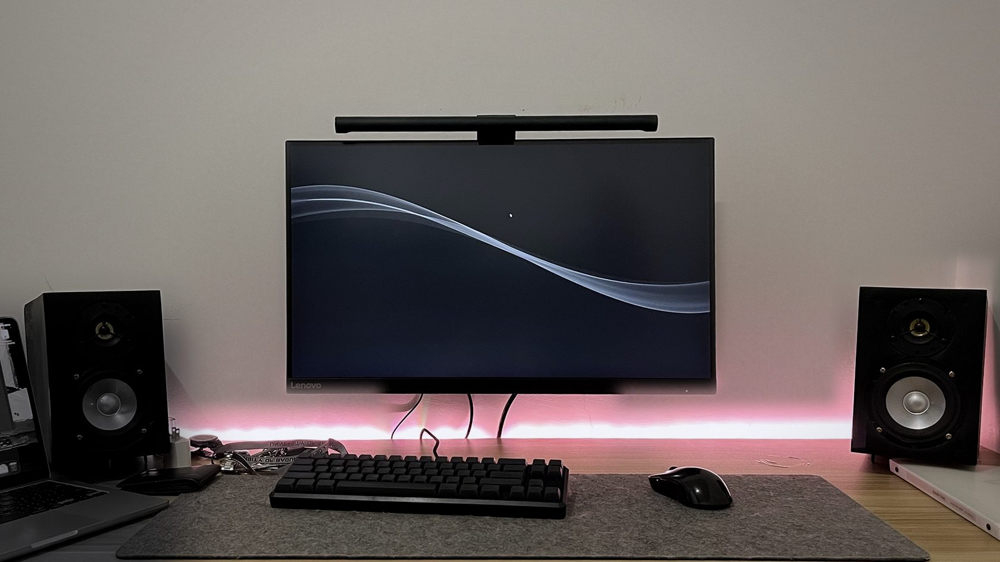

Week 1: GitHub and VS Code
Made my first account and repository, and learned that every save can be undone.
HCI principle: user control and freedom
From Notepad to the Web
One semester of HUMCOM1, written for the next first-year who opens Notepad and types their first tag.

Made my first account and repository, and learned that every save can be undone.
HCI principle: user control and freedom
Sketched on paper first, then rebuilt it digitally for the web.
HCI principle: recognition
My first real HTML page: a doctype, a head, a body, headings and paragraphs.
HCI principle: structure first
Ordered, unordered and definition lists, so a reader can scan instead of read.
HCI principle: match the real world
Links, a table and my first embedded media, all published on GitHub Pages.
HCI principle: information scent
Labels tied to inputs, so clicking the words puts the cursor in the box.
HCI principle: error prevention
A booking page with a form, video, audio, a map and an image map, with no CSS allowed.
HCI principle: affordance
Wireframes before code, then a whole store page built from them.
HCI principle: design process
Selectors, colors, borders, margins and fonts. My pages finally got a look.
HCI principle: visual hierarchy
Everything above, in one place, built to work for everyone.
HCI principle: accessibility